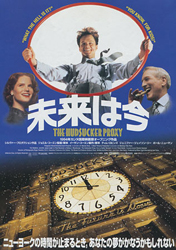
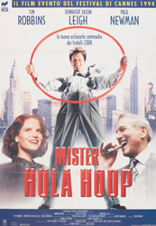
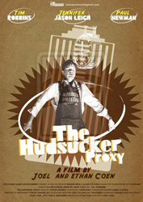
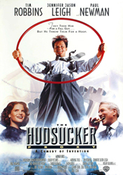
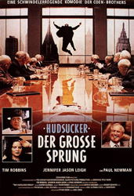

Tim Robbins
Jennifer Jason Leigh
Paul Newman
Charles Durning
Patrick Cranshaw
Jim True
Bill Cobbs
Harry Bugin
John Mahoney
Bruce Campbell
Sam Raimi
Anna Nicole Smith
Arthur Bridgers
Peter Gallagher
Steve Buscemi
Roger Deakins
When Waring Hudsucker, head of hugely successful Hudsucker Industries, commits suicide, his board of directors, led by Sidney Mussberger, comes up with a brilliant plan to make a lot of money: appoint an idiot to run the company. When the stock falls low enough, Sidney and friends can buy it up for pennies on the dollar, take over the company, and restore its fortunes. They choose idealistic Norville Barnes, who just started in the mail room. Norville is whacky enough to drive any company to ruin, but soon, tough reporter Amy Archer smells a rat and begins an undercover investigation of Hudsucker Industries.
The Coen Brothers first met Sam Raimi when Joel Coen worked as an assistant editor on Raimi's The Evil Dead (1981). Together, they began writing the script for The Hudsucker Proxy. They were inspired by the films of Preston Sturges, such as Christmas in July (1940) and the Hollywood satire, Sullivan's Travels (1941). The sentimental tone and decency of ordinary men as heroes was influenced by films of Frank Capra, like Mr. Deeds Goes to Town (1936), Meet John Doe (1941), and It's a Wonderful Life (1946). The dialogue is an homage to Howard Hawks' His Girl Friday (1940), while Jennifer Jason Leigh's performance as fast-talking reporter Amy Archer is reminiscent of Rosalind Russell and Katharine Hepburn, in both the physical and vocal mannerisms.
This was the first time the Coen Brothers chose big stars to act in one of their films. Joel Silver's first choice for Norville Barnes was Tom Cruise, but the Coens persisted in a desire to cast Tim Robbins, When casting the role of Sidney Mussburger, "Warner Bros. suggested all sorts of names," remembered Joel. "A lot of them were comedians who were clearly wrong. Mussburger is the bad guy and Paul Newman brought that character to life." However, the Coens first offered the role to Clint Eastwood, but he was forced to turn it down due to scheduling conflicts.
Production designer Dennis Gassner was influenced by fascist architecture, particularly the work of Albert Speer, as well as Terry Gilliam's Brazil (1985), Frank Lloyd Wright and the Art Deco movement.
The skyscraper models created for The Hudsucker Proxy were later re-used for The Shadow, Batman Forever, Batman & Robin and Godzilla.




